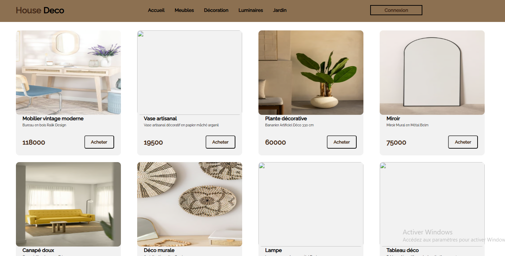
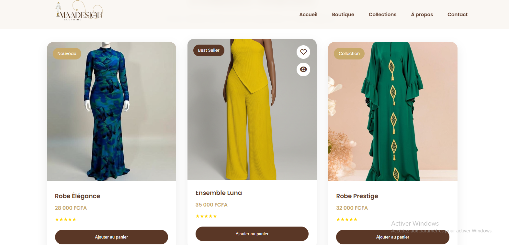
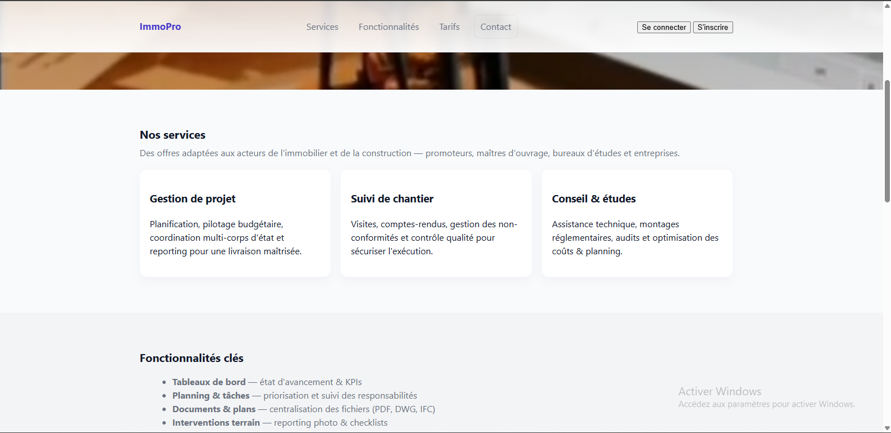

Une développeuse front-end basée à Dakar, passionnée par la création de sites web accessibles et conviviaux.
Voici une sélection de projets qui illustrent ma passion pour le développement front-end.

J'ai conçu une interface utilisateur minimaliste axée sur le visuel, intégrant une barre de navigation catégorisée et une grille de produits dynamique pour offrir une expérience d'achat fluide et intuitive. Ce projet m'a permis de travailler sur l'optimisation de l'affichage des catalogues et l'intégration de parcours utilisateurs efficaces (boutons d'action rapides), aboutissant à une plateforme responsive, performante et prête pour une connexion à des API de paiement ou des bases de données.Pour

j'ai conçu une interface élégante et épurée, mettant en valeur le catalogue à travers des fiches produits dynamiques intégrant des badges interactifs (« Nouveau », « Best Seller »), un système d'évaluation par étoiles et des fonctionnalités de liste de souhaits. J’ai optimisé le parcours client en intégrant un bouton d'ajout rapide au panier directement depuis la grille d'affichage, garantissant une navigation fluide, une expérience utilisateur engageante et une interface entièrement responsive, adaptée aux standards du commerce en ligne moderne.

j'ai collaboré avec ma soeur sur ce projet; Et en tant que développeuse, j'ai structuré l'interface pour présenter efficacement des offres de services complexes B2B (promoteurs, maîtres d'ouvrage) à travers une architecture claire et sectorisée. J'ai conçu des sections de cartes interactives pour l'offre de services, une liste technique et optimisée des fonctionnalités clés (gestion de fichiers PDF/DWG, tableaux de bord, KPIs), ainsi qu'un espace de conversion utilisateur épuré (boutons de connexion et d'inscription). Le projet met l'accent sur l'accessibilité de l'information, la performance de chargement et un design professionnel hautement responsive.
Passionnée par l'univers du web, je souhaite intégrer une structure dynamique où je pourrai mettre mes compétences en développement frontend au service de projets innovants tout en continuant à enrichir mon expertise technique.
En ce moment, j'explore React.js, Next.js, Laravel, et je m'intéresse aussi au design. En dehors du code, j'aime la lecture, la musique, le dessin, le sport,la photographie... Je continue d'apprendre chaque jour pour améliorer mes compétences.
Je suis toujours à la recherche de nouvelles compétences à développer. J'aime relever de nouveaux défis, apprendre des technologies variées et enrichir continuellement mon savoir-faire pour proposer des solutions modernes et efficaces.
J'ai exercé en tant que développeuse freelance sur différents projets, en assurant la conception et la réalisation de solutions web adoptées aux besoins spécifiques des clients. je veille à garantir des livrables de haute qualité alliant accessibilité, performance et fiablité, tout en respectant les délais impartis.
J'ai exercé en tant que développeuse freelance sur différents projets, en assurant la conception et la réalisation de solutions web adoptées aux besoins spécifiques des clients. je veille à garantir des livrables de haute qualité alliant accessibilité, performance et fiablité, tout en respectant les délais impartis.